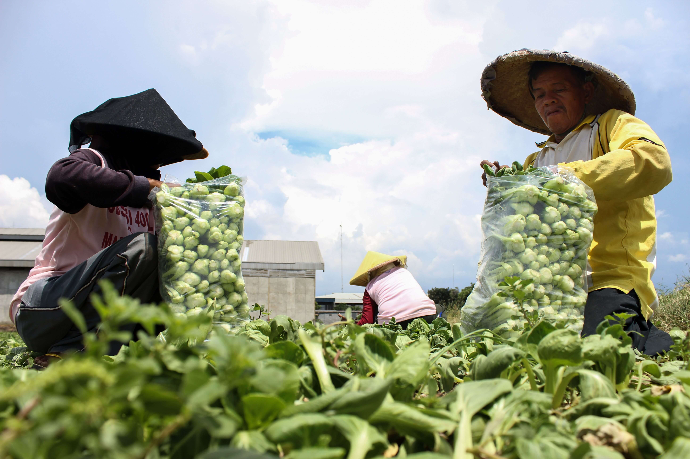

Soil Health
4 Agustus 2026 - 5 min read
Crop Rotation
Administrator
Rotating crops season to season breaks pest cycles and restores nutrients naturally, keeping soil productive for longer.
SelengkapnyaMenghadirkan produk pertanian inovatif dan solusi nutrisi tanaman yang dirancang untuk membantu tanaman tumbuh lebih kuat, lebih sehat, dan lebih produktif.
90%
Tingkat Kepuasan Pelanggan
7+
Tahun Pengalaman
175K
Petani di Seluruh Indonesia
Teknik budidaya praktis yang direkomendasikan agronom kami untuk menjaga hasil panen tetap tinggi dan tanah tetap sehat musim demi musim.

Bene Pyto Tani Jaya merupakan perusahaan agritech Indonesia yang menghadirkan produk dan solusi untuk mendukung kebutuhan budidaya tanaman. Melalui inovasi produk, edukasi, dan pendampingan, kami membantu petani menjaga kesehatan tanaman, meningkatkan produktivitas, dan membangun pertanian yang lebih berkelanjutan.
90%
Kami mengutamakan kebutuhan petani dengan menghadirkan pupuk yang andal untuk meningkatkan kesehatan tanaman dan membangun kepercayaan jangka panjang.
7+
Dibangun dari pengetahuan pertanian yang mendalam dan wawasan lapangan nyata untuk menciptakan solusi yang benar-benar bekerja.
175K
Mendukung petani di berbagai wilayah dengan solusi nutrisi tanaman yang membantu mereka tumbuh, berkembang, dan sukses.
Kisah nyata dari petani yang menggunakan Bene Pyto Tani Jaya untuk bertani lebih cerdas, meningkatkan efisiensi, dan mencapai hasil yang lebih baik di seluruh operasi pertanian mereka.
Produk Bene Pyto Tani Jaya menjangkau petani di berbagai provinsi di seluruh Indonesia. Pilih sebuah kota untuk membuka lokasinya di Google Maps.